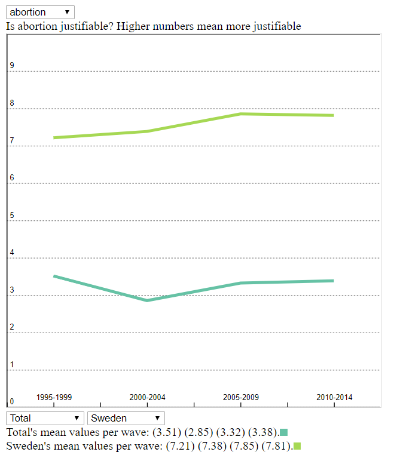

I wanted to be able to select a question, add as many countries as you liked, and view the mean value of each gvs wave for that question on this line graph.

Then, I wanted to be able to select one point of data and then visualize the raw data with bar charts.